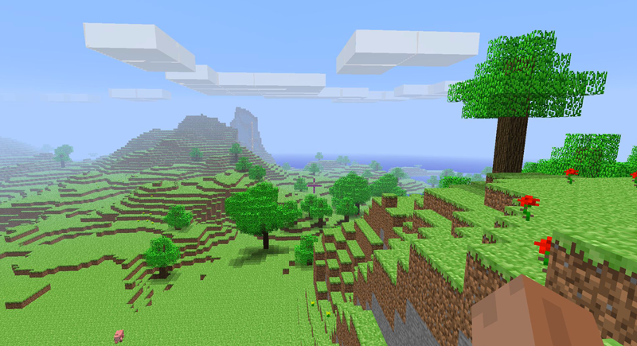

The beginning
In 2009, Minecraft was created by Markus Persson, also known as Notch and was originally called Cave Game. This game was different than other online games where you create things because instead of simply creating structures, you also have to gather resources to build those structures.
This mix was unusual because most games at the time usually only had the player gather resources and not build or to build but not have to gather resources. On top of that, Minecraft was also a survival game. You have to survive hostile mobs and can explore the vast world. You can also use your resources to craft new materials that you can use to create structures, survive longer, and craft more materials.
